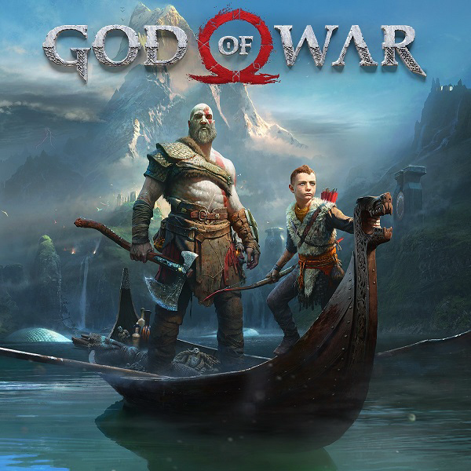

A narrativa neste jogo é de primeira linha. Houve muitos momentos emocionantes neste jogo, alguns até me fizeram chorar. Kratos, por trás daquele exterior estóico e duro, mostra mais emoção, faz com que ele se sinta mais humano do que deus. E Atreus ainda aprendendo, crescendo, mas finalmente fazendo suas próprias escolhas, para ser um homem. As cenas cinematográficas eram simplesmente de nível S. Adorei a história deste jogo e o quanto ele se baseou no anterior. É um daqueles jogos em que parece um ótimo filme e jogo em um só. A Santa Monica Studios acertou em cheio na construção do mundo deste jogo. Eles se basearam no primeiro jogo e frequentemente citam os eventos do primeiro jogo e dos jogos mais antigos, o que aprofunda significativamente a tradição geral. Não acredito que haja um único personagem ruim neste jogo. Eles são todos bem escritos, bem atuados e todos interagem uns com os outros tão bem. Cada personagem tem participações bem escritas no conflito e isso torna o final muito mais impactante. As missões secundárias são simplesmente incríveis neste jogo, embora não todas, mas a maioria delas. Eles acrescentam o mundo, os personagens e suas histórias uns com os outros, e eles têm diálogos importantes e tudo isso apenas me ajudou a ter uma conexão mais profunda com os personagens e o mundo. Os chefes das missões secundárias e os chefes do jogo final também adicionam um desafio divertido ao jogo. O combate é divertido, simples, fácil de entender e satisfatório. Eu adorava criar meus próprios combos na minha cabeça e vê-los dar certo quando os experimentava. Há uma quantidade diversa de habilidades especiais para adicionar às armas e não há uma resposta certa para derrotar os chefes mais difíceis, você pode simplesmente pegar seu veneno e atacá-los. Além disso, a diversidade de builds com as armaduras, relíquias e gemas só aprofundam o combate que é sempre ótimo. A maioria dos pontos negativos que tenho do jogo são apenas detalhes. Não gostei da interface do usuário e do mapa, senti que a interface do usuário poderia ter sido simplificada para facilitar a navegação. O mapa era difícil de usar, era difícil ver qual é o caminho certo a seguir e mal aumentava o zoom para ver os detalhes. Por fim, o combate de Atreus era muito fácil, mesmo na dificuldade mais difícil, que muitas vezes fazia com que as partes em que você o controlasse pareciam estar se arrastando. No geral, adorei este jogo, foi difícil largá-lo mesmo depois de terminar o jogo a 100%. Uma recomendação definitiva para comprar.